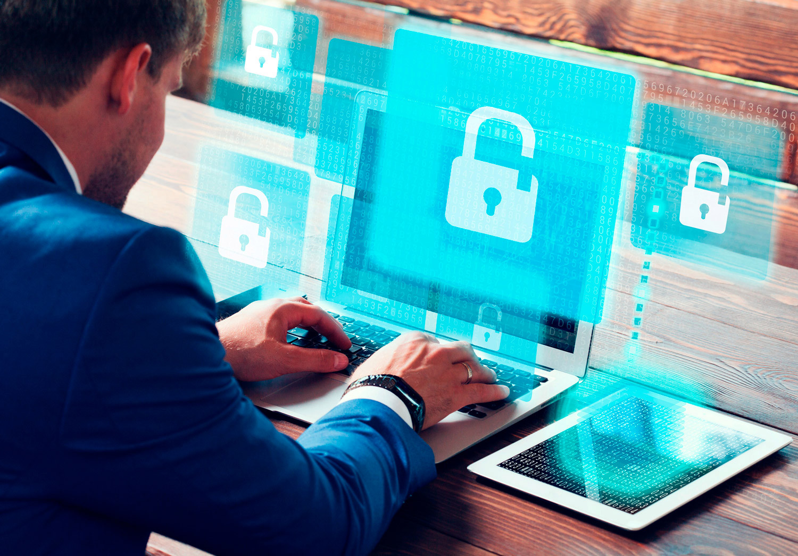
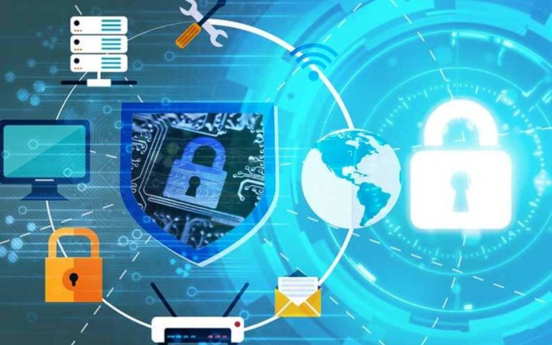
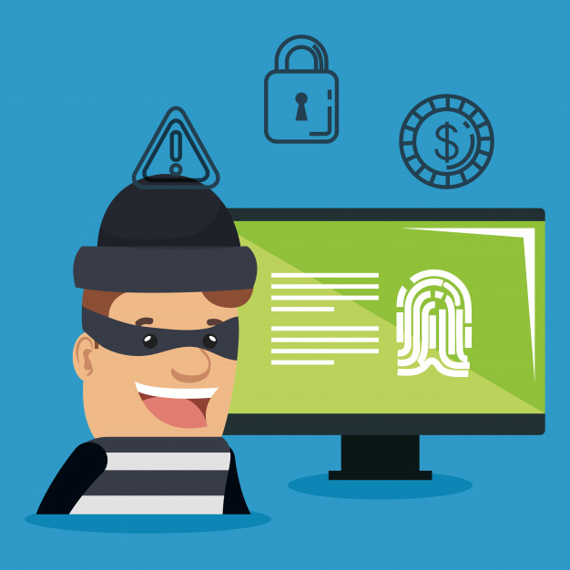
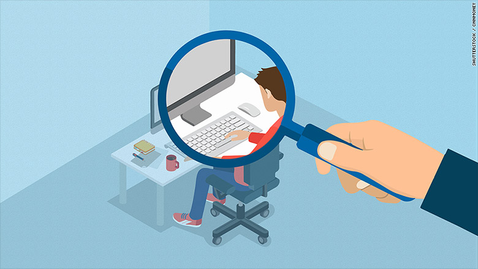

La seguridad informática es en realidad una rama de un término más genérico que es la seguridad de la información, aunque en la práctica se suelen utilizar de forma indistinta ambos términos. La seguridad informática abarca una serie de medidas de seguridad, tales como programas de software de antivirus, firewalls, y otras medidas que dependen del usuario, tales como la activación de la desactivación de ciertas funciones de software, como scripts de Java, ActiveX, cuidar del uso adecuado de la computadora, los recursos de red o de Internet.
  
La seguridad informática es un conjunto de herramientas, procedimientos y estrategias que tienen como objetivo garantizar la integridad, disponibilidad y confidencialidad de la información de una entidad en un sistema.
¿Por qué es tan importante la seguridad informática?
Prevenir el robo de datos tales como números de cuentas bancarias, información de tarjetas de crédito, contraseñas, documentos relacionados con el trabajo, hojas de cálculo, etc. es algo esencial durante las comunicaciones de hoy en día. Muchas de las acciones de nuestro día a día dependen de la seguridad informática a lo largo de toda la ruta que siguen nuestros datos. Y como uno de los puntos iniciales de esa ruta, los datos presentes en un ordenador también puede ser mal utilizados por intrusiones no autorizadas. Un intruso puede modificar y cambiar los códigos fuente de los programas y también puede utilizar tus imágenes o cuentas de correo electrónico para crear contenido perjudicial, como imágenes pornográficas o cuentas sociales falsas.
 